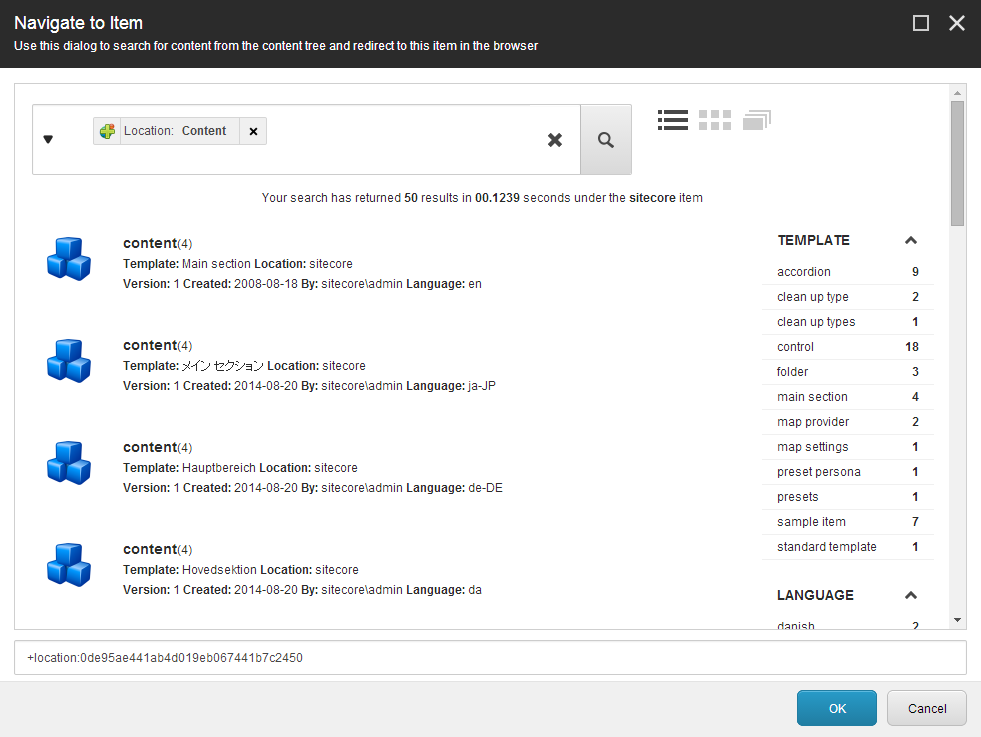

エクスペリエンス エディタのアイテムに移動¶
エクスペリエンス エディタでは、次のいずれかの方法を使用して、作業したいページやアイテムに移動できます。
ナビゲーションバー - ツリー構造でページに移動する場合は、この方法を使用します。
プレビューモード - ウェブサイトをブラウズしてページにたどり着くには、この方法を使用します。
検索 - 特定のアイテムを検索したい場合は、この方法を使用します。これは、別のウェブサイト上のアイテムやページで作業する必要がある場合に非常に便利です。
ナビゲーションバー¶
ナビゲーションバーを使用すると、メニュー構造を使って特定のページに移動することができます。
ナビゲーションバーを有効にするには、リボンの [表示] タブで [ナビゲーションバー] を選択します。
{kind=link}
リボンの下にナビゲーション バーが表示されます。
ページに移動するには、ナビゲーション バーのアイテムまたは矢印をクリックしてから、[移動] をクリックしてメニューのページに移動します。コンテンツ エディタでアイテムのフィールド値を編集する場合は、[編集] をクリックします。 ツリー構造のページに移動するには、ツリー アイコン をクリックし、コンテンツ ツリーで、表示するページに移動してクリックします。
{kind=link}
プレビューモード¶
プレビュー モードを有効にすると、通常のウェブサイトのように特定のページを閲覧することができます。
プレビューモードを有効にするには、リボンの［モード］グループで［プレビュー］をクリックします。
{kind=link}
ウェブサイト上のアイテムをクリックして、該当するページを閲覧することができるようになりました。
検索¶
エクスペリエンス エディターでは、検索を使って特定のアイテムに移動することができ、検索結果からそのアイテムがある特定のページにエクスペリエンス エディターを誘導することができます。また、複数のWebサイトで作業している場合は、検索を使用して、あるWebサイトから別のWebサイトにすばやく移動することができます。
検索を使用してエクスペリエンス エディターを特定のアイテムにリダイレクトするには、エクスペリエンス エディターのリボンで検索 をクリックします。
アイテムに移動]ダイアログボックスでは、すべてのWebサイトでアイテムを検索し、エクスペリエンス エディターを特定のアイテムに誘導することができます。
{kind=link}